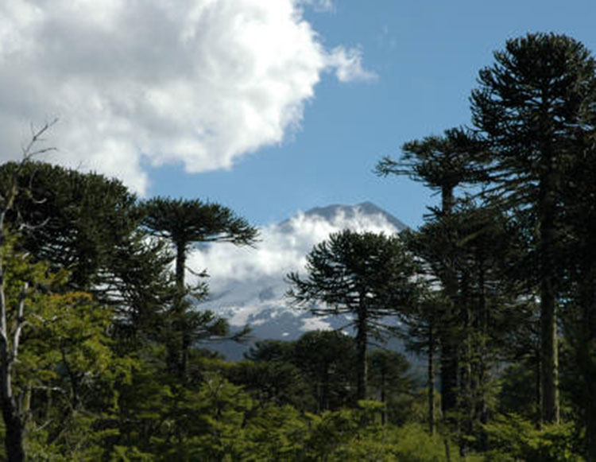
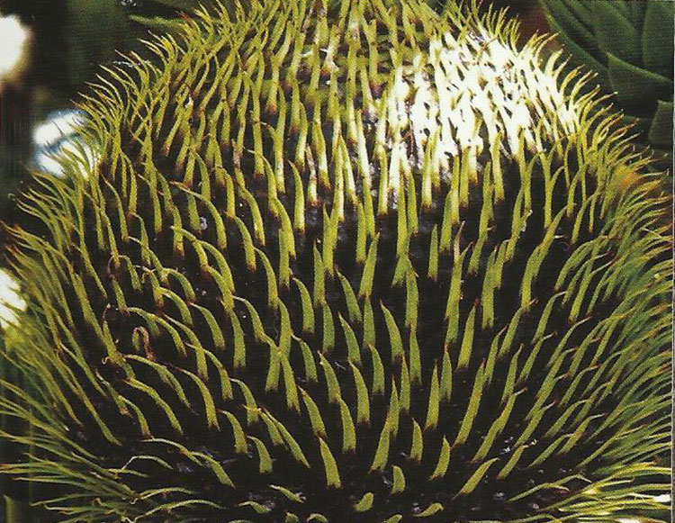
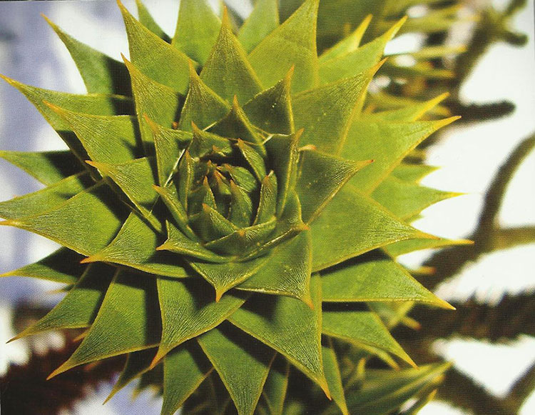

El Piñon
- 
- 
-

- 
Ngülliü
El Piñon
Hablar del piñon no es tan simple como yo me imaginaba, o sea sentarme y solo escribir lo vivido a través de esta semilla. Pero hay tantos detalles tanta información que está adherida a esta semilla, tantos contextos históricos que dan material para compartir de este alimento en particular.
No es llegar y decir se planta la semilla, tiene un ciclo, y podemos tomarlo transformarlo, guardarlo, o simplemente comerlo.
A diferencia de otras especies sin desmerecer el trabajo campesino que para mí son los pilares de la alimentación en estos tiempos, dueños de un saber fundamental para seguir cuidando y habitando nuestro planeta, sabiduría de trabajar semillas, por siglos y generaciones hasta transformarla, adaptarlas y dejarlas aptas para nuestra nutrición.
Pero el piñon proveniente de la Araucaria araucana, nombre científico por la región donde habita, una especie de conífera que es unos de los primeros árboles, o tipo de árbol propiamente tal que habito el planeta, que fue muy numeroso y habito extensos territorios hace millones de siglos atrás aun cuando no sucedía la separación de los continentes.
Imagina que luego fueron naciendo nuevas especies, más eficientes y rápidas en su reproducción que la Araucaria se relego a los territorios andinos entre medio pasaron muchas cosas más que desconozco que me encantaría saber.
Imagina vivir en esos suelos volcánicos, rocosos con varios meses de nieve y aun así sigue siendo un testigo de la historia de nuestro planeta, en nuestro país, aunque la naturaleza no tienes limites políticos, vive aquí.
Entonces cuando hablo de esto, siento que a través de esa semilla que yo puedo hoy comer, estoy siendo testigo de la historia de nuestro hogar la tierra, de todos sus sucesos, quizás desde mucho antes, de la conformación del planeta, entonces en ese piñon hay estrellas, galaxias y quizás cuantas cosas que no puedo imaginar.
La reproducción del Pewen o araucaria, es muy lenta, alcanzan la madurez en un montón de años, entonces para que la araucaria dé piñones es un lento proceso, que no obedece a estadística de productividad, es un árbol que nadie lo riega o lo cuida, entonces cuando leo tanta investigación y cosa que se quiere hacer con el piñón me asusta pensar que tal vez mi hijos o sus hijos no conocerán esta hermosa especie, y disfrutar de lo sagrado de comer esta semilla.
Es por eso que me motiva contar todo esto, tal vez saber un poquito más se le dé el valor respeto y cuidado que merece nuestro delicado bosque único en el mundo, y el pueblo asociado a él, el pueblo mapuche pewuenche y puelche desde el otro lado del a cordillera.
Para el pueblo mapuche pewuenche esta especie con sus semillas, son el pilar fundamental de su alimentación, tienen un vínculo ancestral además de representar parte muy importante de su patrimonio y según lo que he aprendido aspecto primordial de identidad.
La recolección del piñon es una actividad familiar importante, se realiza entre los meses de febrero y abril. Luego en la próxima primavera se recolectan las semillas que quedaron bajo la nieve, y que no se recogieron en la recolección anterior. La características viene en una especie de piña les dejo un fotito, no conozco su nombre formal, están cubiertas estas semillas por una piel muy firme y resistente que en realidad cada vez que lo pelo me doy cuenta que son varias capas de color oscuro en sus extremos y un color particular, rosado con café claro en el resto de su cuerpo.
La semilla es color blanco amarillento, de sabor un poco dulce y de textura muy particular.
La forma de conservarlo son varias por lo menos las que conozco, se pueden enterrar en la tierra, que es un muy buen refrigerador, puestos en un saco y duran mucho tiempo.
También se pueden enterrar en un pozo de agua, se conservan muy bien, al igual que en la tierra, con la única diferencia que al estar remojados por tanto tiempo se cocinan rapidito.
Otra forma es secarlos cerquita de una fuente de calor pero no directo, luego se ocupa según la necesidad
Otra manera es tostarlos un poco en el horno, pelarlos inmediatamente y ponerlo en cuelgas como collares para después de secos hacer harina a través de la molienda de ellos. En fin tantas posibilidades de mirarlo, valorarlo, permitir que este acto sencillo abra la puerta del crecimiento interior al valorar el momento exacto de conectarse con él.
Otro aspecto es el valor nutricional, el piñon tiene un alto valor energético, pero contrastando con eso posee un almidón resistente que beneficia de varias formas nuestro organismo, primero tiene un alto y prolongado poder de saciedad, el almidón al ser resistente permanece más tiempo que los almidones de rápida digestión, no contiene gluten por lo que es un producto apto para los celiacos.
Eso quiero dejarles y que compartan sus comentarios.
En otra ocasión aparecerán recetitas.